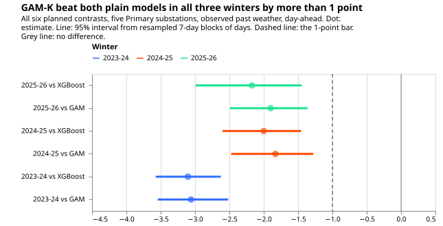
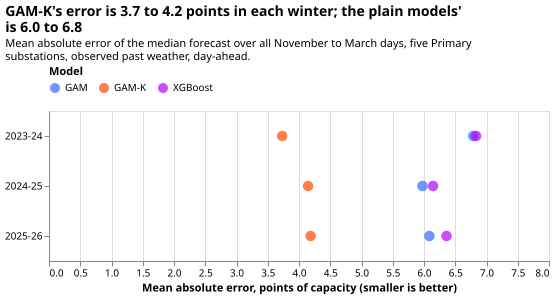
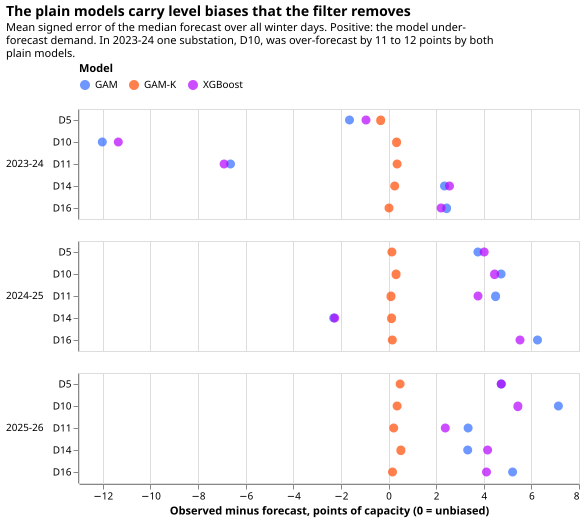

Differentiable physics: GAM-K against the plain GAM and lagless XGBoost over three winters
In all three winters, GAM-K forecast tomorrow's demand at Primary substations 1.8 to 3.1 points of capacity better than both comparison models, but the gain is largely a level correction and partly in-sample. GAM-K is a physics-based demand model, fitted once and frozen for a year, with a Kalman filter that corrects it from recent errors; experiment 111 chose it as the differentiable-physics series' candidate. The comparison models are the same model without the filter (the plain model) and lagless XGBoost, an XGBoost model given no recent power. A Primary substation steps the voltage down for the local distribution network. A point of effective capacity is 1% of a substation's capacity. We rescored the stored day-ahead forecasts of experiment 114 (the plain model and GAM-K) and experiment 109 (lagless XGBoost) for November to March of 2023-24, 2024-25, and 2025-26, at five Primary substations. Nothing was refitted. Each mean absolute error is a mean over the winter's days, in points of effective capacity, and each interval comes from resampling blocks of 7 consecutive days.
Past-weather scoring ranks model structure and does not give production skill. The inputs are ERA5 temperature estimates and CAMS irradiance estimates of past weather, so no weather-forecast error enters. The gap under live weather forecasts is unknown.
Most of the gain is consistent with the filter removing a level error, and this experiment did not separate level from structure. The plain model and lagless XGBoost are each frozen for a year after their fit and carry a level error: both under-forecast by 2 to 7 points at most substations in 2024-25 and 2025-26, and both over-forecast by 11 to 12 points at D10 in 2023-24 (figure 3). GAM-K's filter corrects that error from recent residuals. Lagless XGBoost has no recent power as an input. A post hoc check at the audit supports this. Subtracting each plain model's own winter-mean signed error at each substation, in hindsight, leaves GAM-K ahead of the debiased plain GAM by 0.63 (0.41 to 0.86), 0.71 (0.38 to 1.08), and 0.35 (0.09 to 0.69) points in the three winters, and ahead of the debiased lagless XGBoost by 0.95 (0.66 to 1.21), 1.05 (0.64 to 1.49), and 0.95 (0.40 to 1.58) points. Against level-corrected plain models, 5 of the 6 contrasts would miss the 1-point bar, so the gain over a model that sees recent power is smaller than the planned contrasts show.
The verdict is supported. All six planned contrasts meet the bar (estimate at most −1.0
points, 95% interval wholly below zero). There are three independent winters: separate weather
samples, whose fits share part of their 24-month training window. No winter is clean on every count.
2023-24 is the year on which the filter settings were fitted. The ridge penalty was tuned on a year
that contains 2024-25. 2025-26 was read in an earlier analysis before this plan, and only 2023-24
was a new test in that sense. The three winters are therefore less independent than the count
suggests.
Figures
Figure 1 shows all six planned contrasts well past the 1-point bar. The smallest estimate is −1.83 points (GAM-K against the plain model in 2024-25, interval −2.47 to −1.28).

Figure 2 shows GAM-K's error at 3.7 to 4.2 points in every winter, against 6.0 to 6.8 for the plain models. The plain model and lagless XGBoost are within 0.3 points of each other in each winter.

Figure 3 shows that the plain models are biased and that the filter removes the bias, which is consistent with level tracking being the source of the gain. The bias is the mean signed error over the winter, by substation.

Results
Mean absolute error of the median forecast, all November to March days, points of capacity
(report.txt has every table):
| Winter | GAM | GAM-K | Lagless XGBoost | GAM-K minus GAM | GAM-K minus lagless XGBoost |
|---|---|---|---|---|---|
| 2023-24 | 6.79 | 3.73 | 6.83 | −3.06 (−3.54 to −2.52) | −3.10 (−3.57 to −2.63) |
| 2024-25 | 5.97 | 4.14 | 6.14 | −1.83 (−2.47 to −1.28) | −2.00 (−2.60 to −1.46) |
| 2025-26 | 6.09 | 4.19 | 6.36 | −1.90 (−2.49 to −1.36) | −2.17 (−2.99 to −1.45) |
Exploratory: cold-snap days. The coldest 10% of each winter's days (15 days in each winter) by daily mean temperature. GAM-K minus the plain model is −3.33 (−3.99 to −2.65), −3.48 (−5.52 to −1.65), and −2.11 (−3.92 to −0.66) in the three winters. GAM-K minus lagless XGBoost is −3.47 (−4.16 to −2.30), −3.26 (−4.53 to −1.33), and −0.99 (−3.03 to +0.29): the 2025-26 interval crosses zero. Cold-snap days come in a few spells, so these intervals rest on a few blocks and are rough.
Exploratory: evening peaks (16:00 to 20:00). GAM-K minus the plain model is −3.33, −2.09, and
−2.13 points, and GAM-K minus lagless XGBoost −3.47, −2.17, and −2.45 points. Every 95% interval
lies wholly below zero (report.txt).
Post hoc: a sixth Primary. Adding D9 to 2025-26 gives −1.64 (−2.12 to −1.20) against the plain model and −1.82 (−2.48 to −1.23) against lagless XGBoost. D9 is in the 2025-26 winter only, because its history is too short at the earlier cuts.
Interval choice. Consecutive days share weather, so a day-level resample would be too narrow, and a month-level resample leaves 5 blocks in a winter. A 7-day block was chosen to span a typical weather spell. A 14-day block gives the same estimates with wider intervals (for example −1.83 (−2.75 to −1.16) in 2024-25), and the verdict is unchanged. The intervals cover within-winter weather only, not the differences between substations or between years.
Predictions against outcome
The plan predicted GAM-K minus the plain model at −1.0 to −1.8 points, and minus lagless XGBoost at −1.0 to −2.0, in 2023-24. The outcome was −3.06 and −3.10, outside the predicted range. The level-shift explanation below is a post hoc reading, not a test. In 2023-24 the plain model over-forecast by 12.0 points at D10 and 6.6 at D11, and lagless XGBoost by 11.4 and 6.9 (figure 3), a level shift that a frozen fit misses and the filter corrects. Leaving D10 out, a post hoc check of how much of the gap D10 carries, gives −1.62 (−1.94 to −1.28) against the plain model and −1.85 (−2.21 to −1.48) against lagless XGBoost, inside the predicted ranges. That check shows the gap is concentrated at D10. It does not show that a level error is the mechanism, which only the debiasing check above addresses. The plan's other predictions held: the cold-snap interval crosses zero in one winter, and GAM-K is ahead on evening peaks in every winter.
Checks
- Median minus mean forecast: each stored set has a
meancolumn that equals the median (q50) exactly, so mean-forecast contrasts are the median contrasts. As a separate stand-in, the median minus the mean of the 11 quantiles is between −0.5 and +0.8 points for every arm and winter (report.txt). - Quantile score beside the error contrast: the quantile-score contrasts agree in sign with the mean-absolute-error contrasts in all six cases, for example −2.17 (−2.53 to −1.77) in 2023-24 against the plain model.
- Leave-one-substation-out: every contrast in every winter still meets the bar (smallest −1.55, 2025-26 against the plain model without D10).
- Triggers fired: triggers 2 and 7, with the Opus audit of this pull request. Trigger 2 fired because the result lay outside the prediction and its explanation is supported only by post hoc checks. Trigger 7 fired because a release candidate may lean on this headline. Triggers 1, 3, 4, and 5 did not fire. Trigger 6 (interval width against a sister experiment) cannot be checked, because no sister experiment scored these rows.
- Code review: one Sonnet review of the scoring script found no code change needed. It confirmed that each stored fit stops at its cut, and that every join, mask, and interval is as planned.
Limitations
- Settings chosen on the scored winters. GAM-K's filter settings (the four numbers that set the filter's level and noise, per substation) were fitted on the 2023-24 residuals in experiment 114, and experiment 109 chose its XGBoost variant on 2023-24. The convex model's ridge penalty was tuned on 2024-07 to 2025-06 and its 24-month window was chosen on 2023-24 (experiments 104 and 106). The tuning of the filter settings favours GAM-K in 2023-24. The ridge and the window favour both convex models over XGBoost in 2023-24 and 2024-25, and cancel in GAM-K minus the plain model.
- Past weather. Every input is an ERA5 temperature estimate or a CAMS irradiance estimate of past weather.
- Filter spread in sample in 2024-25. Experiment 114 records that the replicate year's filter spread is in sample for the filter's hyperparameters. GAM-K in 2024-25 is therefore partly in sample for the filter, and this does not cancel in GAM-K minus the plain model.
- Capacity vintage at the 2023-07-01 cut. Experiment 114 records a 5-week leak of capacity vintage at that cut, which touches every arm's 2023-24 normalisation. The stored lagless XGBoost sets were also written at different code versions: the 2023-24 set from an uncommitted working tree, and the 2024-25 and 2025-26 sets from a clean commit. The two versions differ by the capacity-vintage fix and by changes to the spread.
- Five substations. D9 is left out of the planned contrasts, because its history is too short at the 2023-07-01 and 2024-07-01 cuts.
- Lagless XGBoost has no recent power as an input, unlike the lagged XGBoost models of experiment 111.
- Quantile score uses stored quantiles, so the median-minus-quantile-mean check is a proxy.
Substation cards are not needed: the experiment fits nothing and has no new fitted properties.
Plan, written before any result existed
Hypothesis. On past weather, GAM-K forecasts Primary demand one day ahead better than both the plain convex model and lagless XGBoost in each of the three winters, by at least 1 point of mean absolute error.
Decision rule. A contrast meets the bar if its estimate is at most −1.0 points and its 95% interval lies wholly below zero. The 1-point bar was set by the maintainer, and it reflects what the filter adds: GAM-K adds a pipeline step over the plain model and a different model family over XGBoost. One point is about a sixth of the plain models' winter error. Supported: all six contrasts meet the bar. Partly supported: 3 to 5 meet it and none is wholly above zero. Small gain: at most 2 meet it and all six intervals lie below zero. Refuted: any interval lies wholly above zero. Inconclusive: anything else. The rule uses 95% intervals without a multiplicity correction, because "supported" needs all six to pass.
Size. Simple. What gets stored: one private scoring table. Serving path: not touched. Degradation rule: not touched. More than one defensible design: no, because the arms, cuts, row set, and scoring follow experiments 107, 109, and 114. Code whose callers could not be named without searching: none. The plan is the first commit of the branch.
Cold-snap rule (fixed in the plan commit). In each winter, the coldest 10% of covered days by daily mean ERA5 2 m temperature over the five substations, at least 3 days.
Planned contrasts. GAM-K minus the plain model, and GAM-K minus lagless XGBoost, each in the three winters, on all winter days. Everything else is exploratory.
Row set. dp_mw_v1 at D5, D10, D11, D14, and D16, rows outside the hand-filtered switching
events, an inner join of the three arms, no valid time on or after 2026-07-01.
Reproducing
uv run python ml-experiments/00122-differentiable-physics-three-winter-backtest-gam-k/e00122_report.py
uv run python ml-experiments/00122-differentiable-physics-three-winter-backtest-gam-k/e00122_charts.py